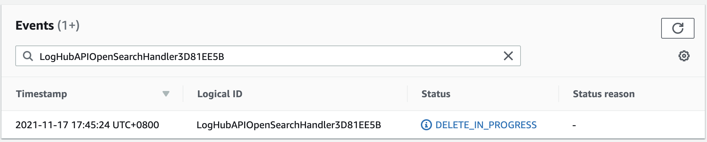

常见问题
如何在与 Log Hub 部署区域不同的区域中提取 AWS 托管服务的日志？
您可以利用 S3 跨区域复制 将日志复制到 Log Hub 部署区域，并设置适当的 对象生命周期管理 删除原始数据。
当更新堆栈时，CloudFormation 堆栈在删除 AWS::Lambda::Function 资源时卡住了。如何解决？
Lambda 函数位于 VPC 中，您需要等待关联的 ENI 资源被删除。

此解决方案有哪些限制？
- Log Hub 仅支持启用了细粒度访问控制的 AOS 域。按照最佳实践，您可以在 VPC 中创建域。不支持使用公共访问的 AOS。
- Log Hub 必须与要使用的 AOS 域部署在同一 AWS 账户和同一区域中。
版本升级
如何升级 Log Hub?
您可以使用最新的 CloudFormation 模板链接来升级 Log Hub。 请参考 升级手册 以升级您的 Log Hub.
日志代理
重启EC2实例后代理状态为离线，如何让它在实例重启时自动启动？
如果您已安装日志代理，但在创建任何日志摄取之前重新启动实例，通常会发生这种情况。 如果您已经配置日志摄取，代理将自动重启。 如果您有日志摄取，
但依然发生此类问题，请使用 systemctl status fluent-bit 检查其在实例中的状态。
日志摄取
我创建了一个应用程序日志摄取，但是在 OpenSearch 中有重复的记录。
这通常是因为没有足够的 Kinesis Shards 来处理传入的请求。 发生阈值错误时，在 Kinesis 中，Fluent Bit 代理将 重试 [chunk](https://docs.fluentbit.io/manual/administration /缓冲和存储）。
我已经将在子账户中的 AWS 服务日志发送到了一个中心账户，我需要怎么通过 Log Hub 来摄取这些日志？
- 请在您的中心账户中部署 Log Hub
- 在创建 AWS 服务日志的摄取时，请选择 手动 模式，在 账户 的下拉菜单选择 "当前账户"，并且输入中心账户中日志所在的位置。
比如, 您已经将各个子账户中的应用程序负载平衡 (ALB) 日志发送到了您中心化的审计账户的 S3 桶中，您需要做以下步骤:
- 在您的审计账户中部署 Log Hub 解决方案.
- 使用 Log Hub 控制台创建日志摄取 参考步骤
- 请选择 手动模式, 在账户的下拉菜单中选择 当前账户 （代表了您的审计账户），在 日志位置 中输入审计账户中的 S3 桶位置。
这样您就能将您存放在审计账户 S3 桶中，各个子账户的 ALB 日志摄取到审计账户中的 OpenSearch。
查看日志
我成功创建了一个 AWS 服务日志摄取，但是在 OpenSearch 中找不到内置仪表板
首先请参考 aws 服务日志概览，查看您创建的服务日志是否支持内置仪表板。 其次请确认您在AOS中选择的是 Global Tenant。
- 点击右上角AOS仪表板的用户名图标。
- 选择 Switch Tenants。
- 在 Select your tenant 页面上，选择 Global，然后单击 Confirm。
我已经选择了 Global tenant. 但是仍然在 OpenSearch 中找不到内置仪表板.
这个通常是由于 Log Hub 在创建 Index Template 或者 Dashboard 时产生了403错误。这个需要按照以下步骤，手动重新运行该 Lambda
- 登陆 Log Hub 控制台, 找到出现该问题的 AWS 服务日志摄取.
- 从 ID 中复制前5个字节. 比如 ID 是
c169cb23-88f3-4a7e-90d7-4ab4bc18982c， 需要复制c169c - 登陆 AWS 控制台，进入 Lambda 服务页面。 在过滤栏中粘贴上一步复制的内容。 Lambda 页面会只显示 Log Hub 为这个日志摄取所创建的 Lambda 函数。
- 找到名称中含有"OpenSearchHelperFn"的 Lambda 函数，并点击。
- 在 测试 页面中，使用任意的事件名称创建一个新事件.
- 单击 测试 按钮以触发 Lambda, 等待 Lambda 执行结束.
- 您应该就能在 OpenSearch 中看到生成的仪表板